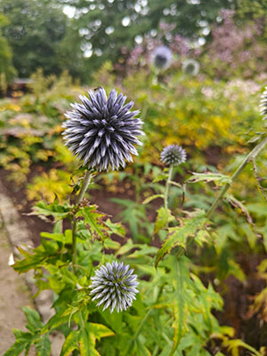
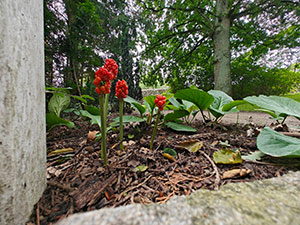
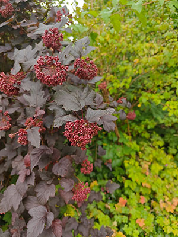
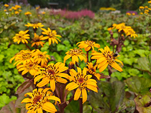

About
An enchanting digital haven dedicated to encapsulating the serene beauty and harmonious allure of Viborg city. Here, the bustling symphony of urban life meets the soothing whispers of nature, all within the heart of Viborg. Through an exquisite blend of meticulously captured sounds and mesmerizing visuals.Immerse yourself in the rustling leaves, the distant hum of the streets, and the tranquil waters that characterize Viborg's unique auditory and visual tapestry. We invites you to experience Viborg's spirit through an intricate fusion of sound and imagery, revealing a side of the city that often goes unnoticed in the daily hustle.






Borgvold & Bible Garden
Borgvold and its old rampart is the oldest and probably most beautiful park in Viborg. It is located right next to the Viborg Lakes. Borgvold as a park was established in 1864 near the lake of "Nørresø" (Northern lake). The rampart is most likely the remains of the King's castle, which Erik Menved built in 1313.

Borgvold & Bible Garden
0:00
0:00